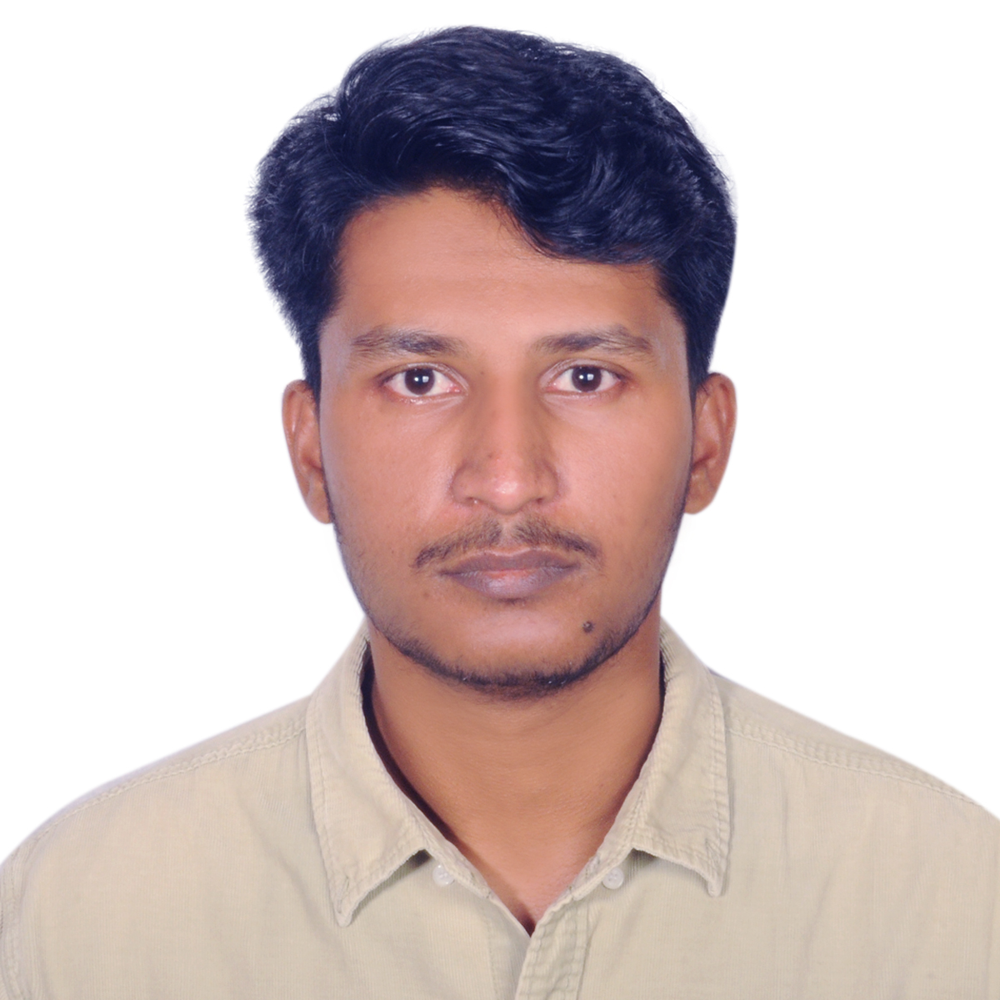
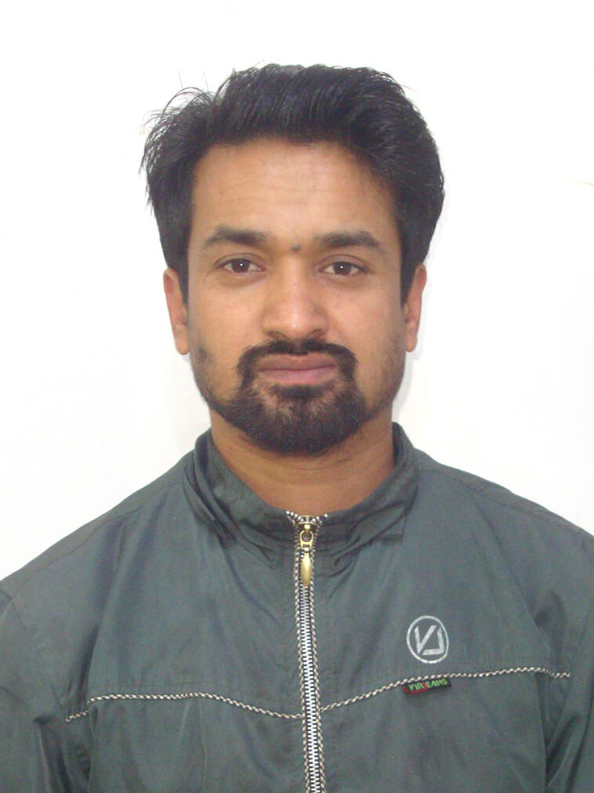

Dr. Rajan Prasad
Lab Director, CEO
PhD in Mechanical Engineering
Khalifa University, 2023
Robotics, dynamics, control, underwater systems, and bio-inspired robotic locomotion.
People
Meet the researchers, collaborators, and students of ABIRAL Lab.

Lab Director, CEO
PhD in Mechanical Engineering
Khalifa University, 2023
Robotics, dynamics, control, underwater systems, and bio-inspired robotic locomotion.

Mechanical Design Engineer, CTO
M.E. in Production Engineering
SHUATS, Allahabad (2019)
Conceptual mechanical design, CAD development, FEA Analysis, Design, Analysis.
Design Engineer
B.E. in Mechanical Engineering
From Aug 1, 2024 to Dec 31, 2024
Contributed to the conceptual design, CAD development, and mechanical realization of Concept Model I during the early foundation phase of the laboratory.
Open Positions
Future MSc, PhD students, interns, research assistants, and academic collaborators will be listed here.